05 · KDA / MLA / MoE kernel：手写的算子要过三关
这章解决什么：这个模型有三块要手写的算子——KDA（一种线性注意力，上游 MaxText 没有）、MoE 专家矩阵乘（GMM）、MLA 用的 Splash 注意力。手写 kernel 本身算得快不够，还要过三关：反向能不能正确地「存一部分、重算一部分」（remat）；XLA 能不能看懂它的成本，好拿它去盖通信；换形状时 tile 参数会不会悄悄算错。术语查 README 术语表。
步时指数：大号模型以单片 BF16 最初基线 = 100，小号模型以开发期起点 = 100（越小越快）。只在单个 A/B 或单 kernel 里出现的数只给百分比。
包含的 feature 与依赖顺序：
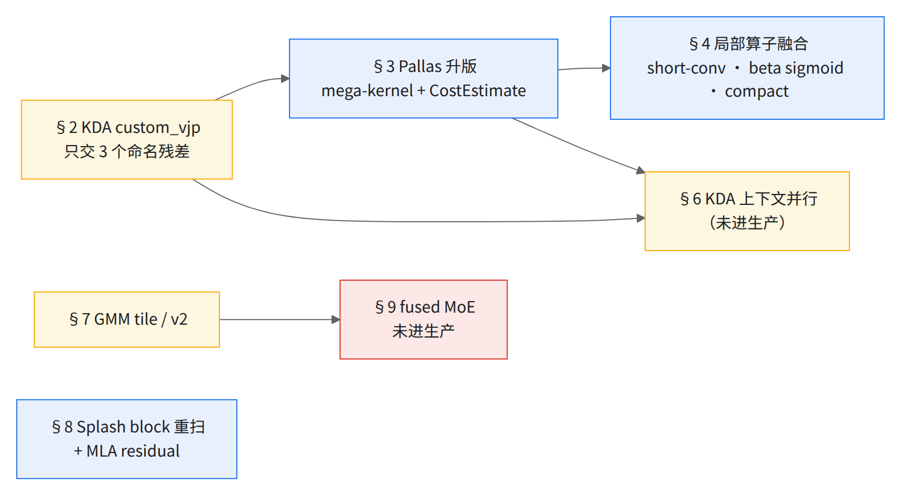
KDA 一条线：先让 remat 看得见 kernel 内部（§2），再升 kernel 版本、给 XLA 报成本（§3），最后把周边小算子塞进 kernel（§4）；§5 是 KDA 的正确性坑与「上游没有时自己做」的骨架，§6 是长序列的 CP。MoE 一条线：先把 GMM 的 tile 和 v2 调对（§7），融合 kernel（§9）建立在它之上但没进生产。MLA 一条线独立（§8）。
- 约 35% KDA 在大号模型 FP8 步时里的占比
- 约 55% KDA 的 roofline 下限约为当前耗时的这个比例
- 约 10% 补上 KDA 残差名字（小号模型，指数 31 → 28）
- 约 3% Splash 块参数退回默认的步时代价（阶梯第 12 级）
1.背景：KDA 是什么、时间花在哪
直觉：普通注意力每个字都回头重看前面所有字；KDA 随身带一个固定大小的「笔记本」——每头一张 d×d 状态表。每来一个字：先按列（key 通道）让表各自褪色一点，再用 key 读出原来记成什么，差多少按 β 比例补一层（秩 1 更新，每格都动）；输出用 query 读更新后的表。
- delta rule ＝ 先擦后写；细粒度门控（KDA 的 K）＝每列一个遗忘速度（Gated DeltaNet 是每头一个标量门）。
看高亮框：块内（chunk 64）并行乘，块间只传绿圈里的状态表（示意）。
- 出处：Kimi Linear, arXiv 2510.26692；状态大小与序列长度无关。
- kernel 在一个单独的 Pallas KDA kernel 库里（按版本 pin；下文按功能称呼各版，如「带 fused 反向 mega-kernel 的版本」），模型层只留薄包装。上游没有，需自行实现（骨架见 §5）。
- 对齐 GPU 侧 Megatron 实现：conv（宽 4）+ SiLU → L2 norm → 门控 → 块 64 chunked delta rule → RMSNorm × sigmoid(gate)。
问题有多大：大号模型 FP8 满配（1 片生产配方原样，指数 37）下采的 profile 里（KDA 整段约占步时 35%），KDA 整段里真正改表的 core 只占约 1/3。按 KDA 内部占比：core 约 35%、QKV 约 25%、gate/norm 约 20%、short-conv 约 10%、输出投影约 9%。roofline 估算的下限约为当前 KDA 耗时的 55%。
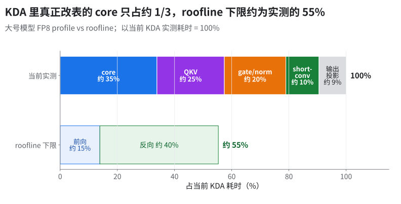
为什么 KDA kernel 的代码量这么大（KDA 部分之外，还另带分块工具和一份 CPU 参考实现）：
| 原因 | 体现 |
|---|---|
反向手写，而且比前向难（pallas_call 能求 JVP，但没有自动转置规则，反向得自己写成 custom_vjp；反向要倒序扫块、重算中间量） |
反向代码量是前向的两到三倍：前向一个 mega-kernel；反向有 mega-kernel、融合版和一个分派入口三份 |
| 几代实现并存：多 kernel 老路径 → mega-kernel → compact／no-pad；老路径留作兜底 | 包装层里老的变长路径和新的原生打包 mega 路径并列，按条件分派 |
| 变体多：推理、逐字递推、变长打包、上下文并行、融合短卷积 | 推理 kernel 和融合短卷积各自是一个大模块；逐字递推、变长、分段打包各有实现 |
| Pallas 要手管片上内存：DMA 分批、双缓冲乒乓 | 反向 mega-kernel 带一组 DMA 分批大小之类的调参旋钮 |
调用链：模型层里的 KDA 薄包装 → kernel 库入口 chunk_kda（jax.custom_vjp，前向／反向规则分别注册）→ 前向／反向 mega-kernel。生产路径大约是前后向两个 mega ＋ 包装 ＋ 短卷积，不到全部代码的一半 [推断：未逐个确认哪些分支在生产形状上会被走到]。
⚠️读本章的数先看口径
- 小号 ≠ 大号：同骨架，小号是整体缩小版。相同的有序列 8192、chunk 64、Muon。
- 小号上的百分比不能直接搬到大号：大号显存压力大得多，最优存法要重测（§2）。
- GBS ＝ PDB × device 数，1 芯片 ＝ 2 device：64 芯片 PDB 2 → 256；256 芯片 → 1024。256 芯片上也试过 PDB 3（GBS 1536），不能和 PDB 2 的数直接比。
📊TPU vs GPU 锚点同一 KDA kernel（T=8192，小号形状）Pallas/TPU7x 与 FLA/GPU 差不到 2%（TPU 略快）。
- GPU 那边的卡型、dtype、batch 不全，只能当「同一量级」的参考，不能当对等比较。
2.KDA custom_vjp：只交出 3 个命名残差（让 remat 看得见 kernel 内部）
前置：无（KDA 能训的前提）。后续：§3 的版本升级都建立在残差名字上；§6 的 CP 也要在这套 custom_vjp 上做；06 的 remat 档位扫描。
收益：小号模型 64 芯片（PDB 2、GBS 256、GA 1），remat_policy=full → 存 3 残差 + context：步时指数 31 → 28（约 −10%）。17 个残差全存 OOM（多出约 19 GB，GB＝10⁹ B，同 06 §10.2）；minimal_offloaded 指数 50（比 full 慢约 60%）。
怎么考虑的：给 KDA 输出打的 checkpoint_name 不起作用，profile 里前向照样被整个重跑——因为计算在 custom_vjp 里，f_bwd 只认 f_fwd 返回的残差。
小号模型上每步每层要跑 4 次 kda_fwd，其中多出来的几次是 remat 重放 [推断]。
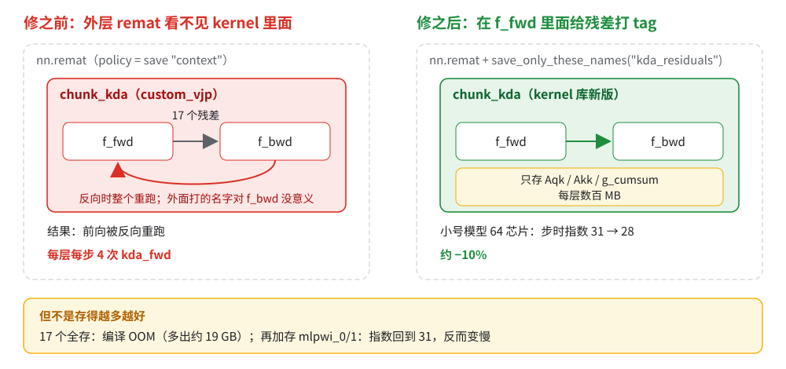
原理：
为什么：Pallas kernel 对 remat 是一整块黑盒，只能整段存或整段重跑，所以得让 kernel 自己交出反向要的那几样。custom_vjp 让前向规则自己交出反向要的几个残差，在里面打上名字、再让 remat 策略按名字留下，就既不 OOM（17 个全存）也不重跑。JAX 源码对这个场景的说明正是「most useful when the fwd rule is an opaque call such as a Pallas kernel」。
GPU 上相当于：手写 Triton／CUDA kernel 包进
autograd.Function后，torch.utils.checkpoint只能决定存不存它的输出、看不进内部，内部中间量只能由 Function 自己save_for_backward交出（类比）。把握：源码证实 · 出处：
jax/_src/custom_derivatives.py中custom_vjp的optimize_remat说明；jax.checkpoint_policies.save_only_these_names；JAX「Gradient checkpointing」文档
- kernel 库从带残差标签的那一版起，
f_fwd内部带kda_residuals标签；remat 策略写save_only_these_names("kda_residuals")。 - 不要再传
optimize_remat=True：它与 MaxText 的 nn.scan ＋ nondiff_argnums 冲突，只靠标签就够。Splash Attention 同理不传。 - 验收：
jax.ad_checkpoint.print_saved_residuals确认只存了那 3 个。
坑：再多存反而变慢。在此基础上再加存 mlpwi_0/1，步时指数从 28 退到 31，几乎退回 full 的水平——全系列最重要的经验：
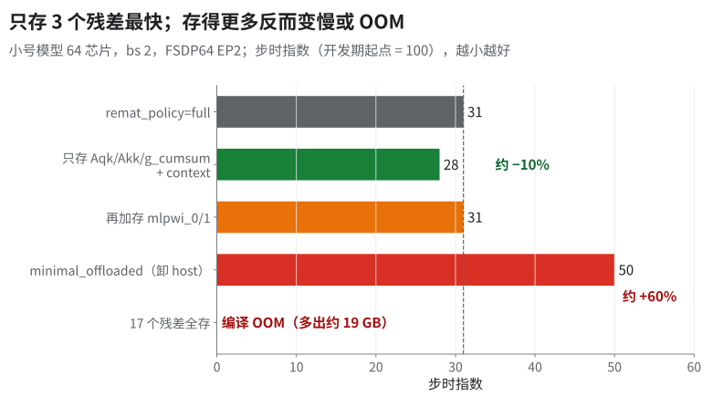
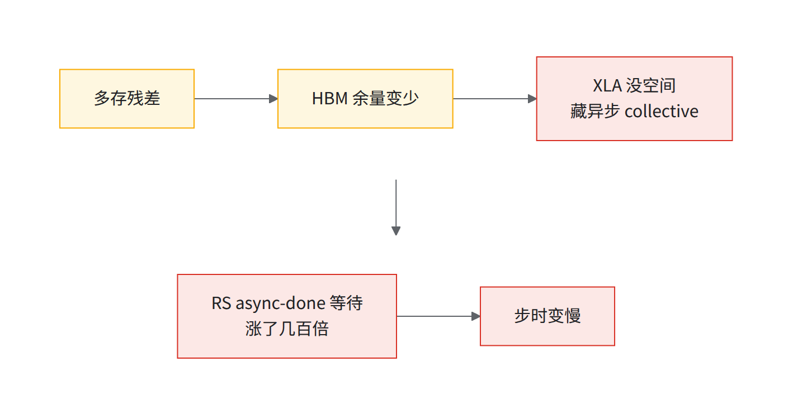
HBM 余量就是调度器腾挪通信的预算。这是有条件的经验，不是定律：
- 成立的前提：瓶颈是调度器（LHS）因为显存不够、没法提前发 collective，通信藏不进计算。本节 RS 等待从微秒级涨到几百微秒就是这种。
- 不成立的情况：瓶颈在算力、DCN 带宽或串行依赖上时，多出来的 HBM 换不来速度。本书自己就有反例：多存（余量变少）却没变慢、甚至变快——EP=1/FSDP=128 下（§7.5），以及 06「remat 策略」一节「不奏效的」里
mlpwi_0/1在 PDB≤2 新基线上变成正收益。 - 先测再套：profile 里看暴露的 collective（尤其 RS 的 async-done 等待）是不是随存法变化而明显变长。变了，这条经验适用；没变，就去查别的瓶颈。
- 大号模型 FP8 上同样试
custom (context=device)：省下约占步时 4% 的重算、RS 多暴露约 5%，步时基本不变（慢不到 1%；和两项之差没全对上，原因没查）。 - 换模型必须重扫 remat 档位：同一刀在三个口径下正负都不一样，这里的结论一条都不能照抄。扫描顺序和每档要记什么见 06「换模型怎么重扫 remat 档位」。
3.Pallas 升版与 mega-kernel + CostEstimate
前置：§2 的残差标签。后续：§4 的局部融合都在新版 kernel 上做；§6 的 CP 路径也基于新版 kernel 库。
- mega-kernel ＋
CostEstimate（同一次小版本升级带来，两项收益未拆）：大号 BF16（256 芯片、PDB 2、GBS 1024）步时指数 89 → 83（约 −7%）；另一组端到端数 90 → 84，也约 −7%（README 用的是这一组；两组数别混着算）。KDA core 约减半。小号（64 芯片、PDB 2、GBS 256）指数取整后都是 16（取整前约 −3%）。 - 带 §2 残差标签的那版 kernel 库（和其他改动一起，单项未拆）：小号 64 芯片 GBS 256 指数 31 → 26（约 −15%，PDB 2 是推断）。
怎么考虑的：前后向各合成一个 mega-kernel，省掉中间量进出 HBM 的往返；同时配 CostEstimate（见原理）。
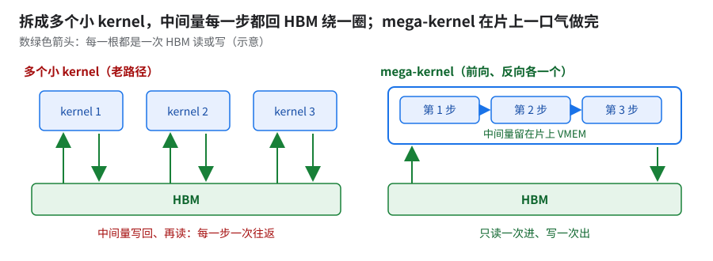
数绿色箭头：上排每步回一趟 HBM，下排只在首尾（示意，往返次数是推断）。
原理：
为什么要带
CostEstimate：XLA 数不出 Pallas kernel 的耗时，不填的后果见下图。
- 填什么：不是耗时，是 flops、transcendentals、bytes_accessed、remote_bytes_transferred 四个量，随 custom call 交给编译器，由后端换算成时间。照实填计算量和字节数即可。
- 未核：后端怎么换算、cost profile 命中时是否覆盖它；TPU 后端实际用哪套成本模型也未公开。
- 判据：同一 kernel 给两组不同的 CostEstimate，看 HLO 调度里前后 start / done 的位置动不动。
把握：源码证实 · 出处：
jax/_src/pallas/core.py::CostEstimate（写进 custom call 的 backend_config）；开源 XLAApproximateLatencyEstimator（custom-call 记kLowCost，异步通信边记 5000）
看红段：不填时 all-gather 排在 kernel 后干等；填了就藏进 kernel 底下（示意）。
怎么开：升 kernel 库 pin；kernel 内 pallas_call(..., cost_estimate=pl.CostEstimate(...))。升 pin 的流程坑见 §5（loss ＋ 性能冒烟一起跑）。
4.局部算子融合：把 KDA 周边的小算子塞进 kernel
前置：§3 的 mega-kernel。后续：无。按收益排可以后做。
| 改动 | 收益 | 口径 |
|---|---|---|
| 入口把 B·T 展平一次调 kernel，代替 vmap（试过、没留下，见表下） | 小号指数 20 → 19（约 −4%） | 小号 64 芯片 |
| short-conv ＋ beta sigmoid 融进 kernel（含短卷积融合 kernel 及其 CostEstimate 的版本） | 算子快约 55%；小号 CI 约 −4% | 小号 64 芯片、PDB 2（GBS 256 ÷ 128 device） |
| compact 元数据、no-pad、融合 gate 反向 | 大号 FP8 指数 39 → 38；KDA 反向快约 30%；pad 开销归零 | 大号 FP8；芯片数与 PDB 未写 |
展平代替 vmap：试过、没留下。做法是用累积偏移让 segment ID 跨 batch 唯一（防全 pad 行冲突）；代价是丢了 initial_state / output_final_state 和 CP 路径（§6）。新版 kernel 库原生支持 batch>1、前后向带 all-gather CP（§6 路二），直接传 batch 维就是一次 launch，展平不再需要。
为什么展平能省约 4%：vmap 让一次 launch 退化成 B 次串行。
- scalar-prefetch 是什么：kernel 开跑前先把一小张索引／元数据表放进 SMEM（标量单元专用的一小块片上存储，见 §7.3），kernel 按它决定每步读哪块。
- 退化机理：被 batch 的若是 scalar-prefetch 参数，JAX 退回显式循环，每个 batch 单独 launch，各付一遍首尾气泡和切片拷贝；普通 kernel 只是 grid 前多一维。
- KDA 为什么中招：变长版把分块元数据表预取进 SMEM（06「显存突然爆了」一节），按理落在这条分支 [推断]。
把握：源码证实 · 出处：
jax/_src/pallas/pallas_call.py::_batch_with_explicit_loop；Pallas TPU matmul 教程（pipeline bubble）；06 的chunk_indices
数红色气泡和灰色拷贝各出现几次。
坑：compact／no-pad 默认开，只验证了 20–50 步大号 FP8 ＋ 1000 步小号；两项应分开验证，因为一起开时出了偏差分不清是哪一项（§12）。FP8 和带 fused 反向 mega-kernel 的那版 kernel 一起开时，编译期 layout 校验报错（T8/T16 冲突：两边要的 tile 布局分别是 8×128 和 16×128 [推断]，绕法见 §12）。
5.KDA 的正确性坑与「上游没有时自己做」的骨架
- gated RMSNorm 其实关着：kernel 库里 Pallas 版 gated RMSNorm 的模块级开关默认关，以为在用融合实现，实际没用上。要在 trace 里确认它真的出现。
- 用原始 logit 训练：β 的 sigmoid 开关若默认关，β 就直接拿原始 logit 用，不报错。这个参数必须是必填关键字参数，调用方显式选。
- AOT 陷阱：CPU 交叉编译漏设 kernel 库的目标平台环境变量（应为
tpu），走了 JAX 参考实现，慢 2–3%。
⚠️KDA 的其他坑
- 升 pin 可能直接坏掉：升 pin 可能让 step 0 loss 从约 1.9 跳到约 7.9、grad NaN，问题出在「关重算 ＋ 按 H 维切 mini-batch」这个组合上。所以升 pin 先跑 64 芯片冒烟，坏了就二分 kernel 选项。
- 升 pin 只看 loss 会放过性能回退：一个更小的测试模型上换了 kernel 库版本，loss 与 Megatron 完全对齐（step 0 差约十万分之五，无 NaN），步时却慢约 6.8 倍。升 pin 要 loss 对齐 + 性能冒烟一起跑。
- 短卷积的卷积／互相关约定：GPU 侧
ShortConvolution是真卷积，权重转换时要沿时间轴 flip 一次；漏了 flip，输出静默错位。改成互相关约定、去掉 flip 也行，但要从 HF 重转旧 checkpoint，没采用。换框架搬卷积权重，先拿单样本逐位对一遍。- 变长打包要在文档边界重置状态：KDA 是递推的，状态 S 会跨文档泄漏；把
segment_ids传进 kernel、在边界清零（07）。- segment 数有上限：kernel 按段重置状态，段数是静态上限。KDA 专用的上限默认 0，≤0 时退回 packing 的兜底值 25；碎样本拼进去超过 25 段时，第 26 段起 KDA 输出直接置零，不报错。修法：上限设成序列长度（每 token 一段的最坏情况）并加容量检查。
- 上游能到哪：上游 Tokamax 的实验目录里有一份 KDA kernel，残差名同样是
kda_residuals，但目前不可用（§12 表最后一行）；生产用的 kernel 库不公开。 - 最小骨架（只列书里已经验证过的做法）：
- 前向 Pallas kernel 按 chunk 64 分块，外面包
jax.custom_vjp。 f_fwd只把 3 个局部量（Aqk、Akk、g_cumsum）当残差交出去、打kda_residuals名字，其余反向重算（§2）。- 反向手写，倒序扫块。
- kernel 带
pl.CostEstimate，否则 XLA 拿它盖不了通信（§3；调度侧见 02 §8）。 - batch 维让 kernel 原生带，别用 vmap 套（§4）；做不到先展平 B·T。
- 前向 Pallas kernel 按 chunk 64 分块，外面包
- 后加的几刀：前后向 mega-kernel（§3）、短卷积和 beta sigmoid 融进 kernel、compact／no-pad 元数据（§4）。
- 骨架版能拿回几成：未测。书里只有完整版各刀的分项数。
- 验收：loss 和性能冒烟一起跑；用
print_saved_residuals确认只存了那 3 个残差。
6.KDA 上下文并行（CP）：两条路，都未进生产
前置：§2、§3。后续：无（目标是 256K 以上长序列）。
怎么考虑的：单 device 放不下整条激活，要沿序列切。难点是 KDA 递推：切开后每段从零状态起算，长程依赖在分片边界静默断开（13「CP 下线性注意力状态在分片边界断开」）。
路一：Ulysses 式 all-to-all（context_parallel_strategy=a2a）
- 原理：每 device 拿完整序列、部分头，不用跨分片传状态；出来再换回去。
看颜色从按列变按行：换完每个 device 的绿点沿完整序列递推（4 卡示意）。
- 各层怎么发 a2a：
- KDA：在
shard_map里显式写lax.all_to_all。 - MLA：不手写，靠
with_sharding_constraint给出前后 sharding，让 SPMD 自己插 a2a。 - Splash：AttentionOp 加一个「a2a 已在外面做过」的标志，让 Splash 在 head 轴上看到
context轴（kernel 内不再按序列切）。 - MTP：目标右移原来用
jnp.roll，序列切开后会在分片边界丢 token，改成ppermute版的 CP 感知 roll。
- KDA：在
- 顺带解锁了 packing 与 CP 同开（没有这套 CP 时两者叠加直接报错）。
- 效果：KDA / MLA 的 CP=1 对 CP=4 单测 bit-exact；极小模型 CP=2 跑 1000 步，对 Megatron 的 LM loss 平均相对差不到万分之一；小号模型 CP=8 能跑、不 OOM。性能没量。
- 坑：
SHARD_EXP_ON_FSDP默认必须是 true；被改成 false 不报错，专家权重会静默换一种切法。大改并行策略的改动要逐个核对默认 flag。- [推断] a2a 换头要求头数能被 CP 整除，CP 度受头数约束。
路二：all-gather + 转移矩阵合并（对齐 FLA 的 ops/cp）
- 原理：每个分片先在本地算自己那段；线性递推的「段对状态的作用」可以写成一个转移矩阵，沿
context轴 all-gather 各段的转移量，再按顺序合并，就得到每段真正的起始状态 [推断：机理按 FLA 的 CP 实现理解]。 - 接口：入口多一个 CP 上下文参数（mesh ＋ 轴名），支持变长打包。
- 现状：kernel 只做了前向；配套设计（短卷积 halo 交换、独立
shard_map包 q/k/v 卷积）无实测；4 卡加速比没有可靠的预估，不给数。
⚠️CP 下短卷积要交换 halo宽 4 的短卷积若不在
shard_map里，CP 下会静默退化成各分片独立卷积：每段开头丢掉左侧几个 token 的上下文，loss 看不出。修法：用jax.lax.ppermute把上一分片末尾的 halo 发过来再卷积（详见 13）。
7.GMM tile 与 Tokamax GMM v2（非融合路径，生产一直在用）
前置：无。后续：§9 fused MoE；04 的 FP8 GMM。
收益：
| 改动 | 前 → 后 | 口径（模型／芯片／PDB） |
|---|---|---|
| 扫 GMM tile（wi、wo 两个方向分开扫） | wi kernel 约 −25%；小号步时指数 24 → 23（约 −5%） | 小号／v7x-128（64 芯片 [推断：128 指 device]）／2，EP=2 FSDP=64 |
| 修正 dlhs tile（slot1 = K、slot2 = N，原来填反） | 小号约 −4%（指数取整后都是 20） | 未核 |
保存 MoE 路由索引 + mlpwi_0/1（PDB≤2） |
小号指数 20 → 18（约 −6%）；op 级 profile 预测不出 | 小号／64／2（硬件口径未核） |
| 大号 256 芯片调 MoE tile（PDB=2） | BF16 指数 99 → 91（约 −8%） | 大号 BF16／256／2 |
| Tokamax GMM v2 默认开 | 大号指数 75 → 73（2–3%）；小号 CI 约 −4% | 大号 BF16／256／2／GBS 1024；小号 CI 未核 |
| GMM v2 退回 v1（knockout，基线 45） | 慢约 9% | 大号 FP8 1 片 AOT knockout（09） |
| 生产专家数下 tile 退默认 | 编译不过（SMEM 溢出，阶梯第 13 级） | 大号 FP8 1 片 AOT |
经验（本模型上）：坏的 tile 默认值比任何 dtype 收益都大。
7.1 原理：tile 为什么比 dtype 要紧
为什么：FP8 最多让乘法快一倍，tile 选坏却能让 kernel 从算力受限掉到访存受限，慢好几倍（blockwise FP8 慢约 3 倍，就是 tile 封顶所致，见 04 §2.1）。
- 太大还会撑爆 VMEM（kernel 用的片上暂存；类比 GPU 的 shared memory，容量和作用域不同）。
- 上游默认值：全是同一组，不看每专家 token 数，也不看是否量化。
- 可迁移的规则 [推断]：权重在 tile 内被复用的次数正比于 tile_m，即每读一字节权重能做的计算量 ∝ tile_m；低于「峰值算力 ÷ HBM 带宽」就转为访存受限（roofline 估算，按 dtype 字节数换算常数）。换模型时先按每专家 token 数和这条线定 tile_m 的下限，再扫（§7.4）。
GPU 上相当于：grouped GEMM 的 BLOCK_M／N／K 要按实际形状 autotune，默认块大小不保证快（类比）。
把握：文档证实 · 出处：Pallas TPU matmul 教程（block 大小一节）；MaxText
kernels/megablox/pallas_mosaic_tpu_v2_gmm_kernel.py::calculate_tiling（tile_n 不小于 2 倍 MXU 列宽、VMEM 估算）；configs/base.yml的 GMM tile 默认值
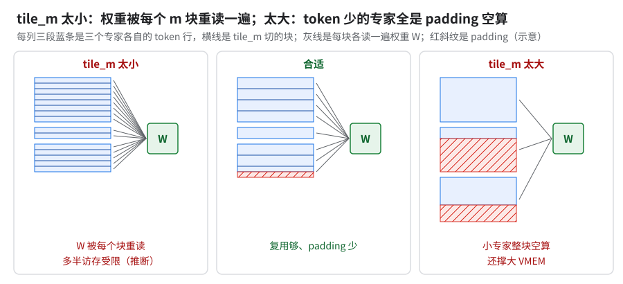
看左栏重读次数和右栏斜纹（padding）面积，中间那档两样都少（示意）。
7.2 GMM v2：反向 dX 不再物化 Wᵀ
为什么：v2 不再在 HBM 里物化 Wᵀ（对比见下图）。
- 代价在哪：物化 Wᵀ 多一读一写，外加一块权重大小的临时缓冲（见下图）。
- XLA 为什么不吸收这次转置 [推断]：custom-call 的操作数布局通常是固定的，XLA 没法把 swapaxes 折进布局选择或融合，只能落成一次转置拷贝。判据：看 HLO 里 dlhs 那个 custom-call 前面是否紧挨一个 transpose / copy fusion。
- 不确定项：上游这条原生路径另有一个开关、默认关，上面两次实测开没开它，不确定。
- 两个数的口径：2–3% 是 BF16 下设 v2 为默认的增量；约 9% 是 FP8 knockout（基线 45）上退回 v1 的代价，后者还叠着 v2 自带的核内量化收益 [推断]。
GPU 上相当于：cuBLAS 的 GEMM 用 transa／transb 标志按转置方式读 W，而不是先物化一份 Wᵀ。
把握：推断（机制本身源码证实） · 出处：MaxText
kernels/megablox/ops.py::_dlhs_run_tokamax_v2；开关是configs/base.yml的moe_gmm_v2_dlhs_transpose_rhs（默认 false，见注释）
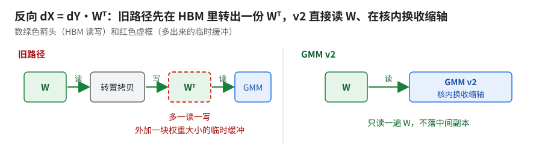
看上排多出的 Wᵀ 和 HBM 往返，下排没有（示意）。
7.3 SMEM 溢出长什么样、能不能事先估
- 报错原文（AOT 编译日志）：
RESOURCE_EXHAUSTED: XLA:TPU compile permanent error. Ran out of memory in memory space smem. Used … of … smem. Exceeded smem capacity by …。是编译期错误，不用上卡就能撞到；大号 FP8 1 片 AOT 要编约两个小时才报（06 阶梯表第 13 级）。 - 怎么读：报错下面的
Largest program allocations in smem每项带Tag和 XLA label，label 里有 kernel 名和 tile 参数，据此认出是哪个 kernel、哪组 tile。Tag有scratch operand／prefetched SMEM operand N／DMA stride descriptor，该例里最后一类最多。- 排在前面的全是反向 drhs 的
tgmm_v2的元数据 scratch 和预取的group_sizes。
- 上游 v2 往 SMEM 放什么（
src/maxtext/kernels/megablox/pallas_mosaic_tpu_v2_tgmm_kernel.py、pallas_mosaic_tpu_v2_gmm_kernel.py）：- 两张 int32 元数据表，每个「组 × m 方向块」一条，长度随组数和 ⌈M ／ tile_m⌉ 一起涨；
- 外加
PrefetchScalarGridSpec预取的group_sizes、group_offset。所以 tile_m 越小、组数越多，元数据越长。
为什么：SMEM 是标量单元专用的一小块存储，装不下就编译失败，不会退化成变慢。做控制流决策的数据（分组表、预取的每组大小、DMA 描述符）都得放这里。占用主要随组（专家）数涨，本就贴着上限；tile 一变，展开的 DMA 拷贝数跟着变，就可能越线 [推断]。「编译期静态分配、没有溢出到 HBM 的路」文档没写，也是推断。一对数字：KDA 256K 配置要 2,109,440 B，上限 1,048,576 B（06「显存突然爆了」表）。
GPU 上相当于：Triton kernel 要的 shared memory 超过硬件上限时直接报 out of resource，不会自动降级（类比）。
把握：文档证实 · 出处：Pallas「TPU details」文档（scalar memory 一节）；MaxText
pallas_mosaic_tpu_v2_tgmm_kernel.py里的 SMEM 元数据 scratch 和展开的make_async_copy
- 估法：未核。该例单项都不大，溢出发生在比调好的值更大的默认 tile 上，和「tile_m 越小越占」方向相反（09 §4.13 GMM tile 调优），总量怎么累计到上限的没查清。能做的：
- 换形状／tile 前先 AOT 编一遍，拿报错清单定位；
- 查同类表是不是按长维度整张预取（KDA 256K 溢出的修法就是把「按 chunk 数」的预取表换成「按序列数」的紧凑表，06）。
7.4 怎么复现：tile_m 从哪起扫、扫描网格、配置键对应
每专家 token 数不一样时，tile_m 从哪起扫（书里没有现成规则，下面是方法）
- 上游两版 GMM 都在 m 方向按组切块（
src/maxtext/kernels/megablox/）；部分 tile 是不是和满 tile 一样贵未核：- v1
backend.py的make_group_metadata：每个不从 tile 边界开始的组多访问一次部分 tile； - v2
pallas_mosaic_tpu_v2_gmm_kernel.py的fill_metadata：每组取 ⌈(组行数 ＋ 起始行在 sublane 内的偏移) ／ tm⌉ 块。
- v1
- 起点：先按自己模型算平均每组行数（本 device 的 token 数 × 每 token 选的专家数 ÷ 本 device 的专家数），以它为参考，上下各放宽到 1/8 到 8 倍，在这个范围里取 2 的幂做候选（最优值不一定贴着平均值）。
- 分布偏的时候：从真实 run 里取几步
group_sizes，按候选 tm 算行利用率 Σg ÷ Σ(⌈g／tm⌉·tm)。利用率明显低的先剪掉，剩下的进 11 A11 的单 kernel 计时。 - 对照组：
use_gmm_v2_heuristic_tiling（base.yml默认 false）。开了走 v2 自带的calculate_tiling：bf16×bf16 时 tile_m 取 128，再按 lhs／rhs 位宽缩放（源码注释说 128 是多数场景下安全的最大值）。 - 书里唯一的锚：EP=1 时实测最优 tile_m 比 base.yml 默认值小（09 §4.13 GMM tile 调优；和 v2 启发值谁快没测过，见 11 A11）。所以平均值只定起点，最后看计时。
- EP > 1 时平均每组行数是 EP=1 的 EP 倍（符号式，没实测，[推断]）：
- 记 T ＝ 每 device 的 token 数，k ＝ 每 token 选的专家数，E ＝ 总专家数。EP=1 时每 device 持有全部 E 组，平均每组 T·k ／ E 行。
- EP 路切专家后每 device 只剩 E ／ EP 组，路由均衡时 dispatch 后收到的总行数仍约 T·k，所以平均每组 EP·T·k ／ E 行。
- 换 EP 要按新平均值重定起点，不能沿用 EP=1 扫出的 tile；路由越偏，热点组越长、冷组越短（甚至为 0），利用率按上一条的
group_sizes法算。
- 扫描网格怎么搭（只讲方法）：
- tile_m：平均每组行数附近的 2 的幂各取几个，再加上 v2 启发值做对照。
- tile_k、tile_n：取对应维度的整除数里 128 的倍数（K 不能整除 tile_k 会撞 §10 的尾 tile NaN）。
- 三个方向（前向 fwd、反向 dlhs、反向 drhs）各扫各的，不要把一个方向的冠军套给另一个（§10 反例表第一行）。名字按上游配置键，对应关系见下表。
- 先剪枝再计时：一个候选的片上占用粗估为「LHS 块 ＋ RHS 块」× 2（双缓冲）＋ FP32 累加块，超 scoped VMEM 的直接丢 [推断，粗估没含 kernel 其它 scratch]；能编过的先按「tile 扫描两条硬规矩」（§10）查数值，再按单 kernel 计时排名，前几名进端到端。
三个 GMM kernel 和配置键怎么对上（上游 configs/base.yml 的 18 个键 {wi,wo}_tile_{fwd,dlhs,drhs}_{batch_seq,embed_dim,mlp_dim}；槽位按 layers/moe.py 传给 kernels/megablox/ops.py 的顺序）
| 方向（键中段） | 算什么 | v2 kernel | tile_m ← | tile_k ← | tile_n ← |
|---|---|---|---|---|---|
fwd |
Y ＝ X·W | gmm_v2 |
batch_seq |
wi：embed_dim；wo：mlp_dim |
wi：mlp_dim；wo：embed_dim |
dlhs |
dX ＝ dY·Wᵀ | gmm_v2 |
batch_seq |
wi：mlp_dim；wo：embed_dim |
wi：embed_dim；wo：mlp_dim |
drhs |
dW ＝ Xᵀ·dY | tgmm_v2 |
batch_seq（这里其实是收缩的 token 维） |
wi：embed_dim；wo：mlp_dim（这里其实是 LHS 批维） |
wi：mlp_dim；wo：embed_dim |
- m ＝ LHS 行（token）、k ＝ 收缩维、n ＝ RHS 列；drhs 沿用这三个槽名但含义错位，源码注释写道「Called m in megablox, but this is contracting」。
- dlhs 的 k 槽填的是前向 n 那一维，§7 收益表里「slot 填反」就是这里。
- 前向另有
eval_前缀的一组，只管 eval；use_gmm_v2_heuristic_tiling开了这 18 个键全被忽略。
7.5 MoE 路由索引：存还是重算
MoE 路由索引是每个 token 选中的 top-k 专家编号，这套方案为它单独加了一个 remat 键（上游没有）。大号 FP8 256 芯片上两份数据各指向一边（存在 device 上、反向重算），差距都不到 1%，在单次波动以内。生产用 device。
| device（存下来） | remat（反向重算） | |
|---|---|---|
| 数从哪来 | 引用已有的 profile 证据，没做端到端 A/B | 端到端开关对比，差不到 1%，两边各跑一次 |
| 状态 | 生产配置里有 | 验证过，未进生产；还绑着别的配置改动 |
- 两个数都不能当胜负：一个不是端到端，一个是单次而且混着别的改动。这点差在单次波动以内 [推断]。
- 判断依据是 HBM 余量：余量多就存（device），省掉反向里的 top-k；余量紧就重算（remat），把 HBM 留给集合通信藏身（§2 那条经验）。
- 自己测：两种各跑多步取中位。做对了的样子：remat 档在反向 profile 里会再出现 top-k / sort 类算子，device 档没有；再比暴露的 RS 有没有因为多占 HBM 变长。
7.6 上游路径下共享专家怎么排、要不要单独 remat（未测）
- 怎么排：上游
layers/moe.py的RoutedAndSharedMoE里，共享专家是一个普通MlpBlock（宽 ＝shared_experts× 共享宽度），走稠密dot_general，不进 GMM。Python 里排在路由 MoE 之后，两者没有数据依赖，最后相加。它能不能和路由那边的 a2a／AG 重叠由 XLA 调度决定，书里没量过。 - remat 的名字撞车，只给共享专家单开一档做不到 [推断：按源码里的名字推，没跑过]：
MlpBlock的激活名是mlpwi_0／mlpwi_1（只有一个激活函数时叫mlpwi）和mlpwo（layers/linears.py）。- 路由专家的 w0、wo 在
layers/moe.py的 sparse、dense 两条路径上都套了上游名和moe_前缀名两层（mlpwi_0＋moe_mlpwi_0、mlpwo＋moe_mlpwo）。w1 不一样：sparse 路径只打moe_mlpwi_1，dense 路径才两个名字都打。 - 所以
mlpwi_0: device会连路由专家的 w0 一起存；mlpwi_1: device在 sparse 路径上存不到路由专家的 w1，要存得写moe_mlpwi_1；minimal／minimal_with_context预设本来就存mlpwo，同样分不开；moe_mlpwi_*／moe_mlpwo只管路由那份。
- 测法：
- 每种 policy 下用
jax.ad_checkpoint.print_saved_residuals打出存下来的残差和名字，确认共享专家那几个张量存了还是重算了。 - 在 profile 时间线上看共享专家的 dot 有没有落在 a2a／AG 底下。
- 共享专家「存」对「重算」做 A/B，比步时和峰值显存，多步取中位。
- 每种 policy 下用
8.Splash block 重扫与 MLA residual
前置：无。后续：CP 下的 block 约束（§10 硬规矩第 2 条）。
问题有多大：MLA 约占大号模型 FP8 256 芯片步时的 5%，其中 Splash 约占六成（01 模块表，步时指数 37 的配置）。
怎么考虑的：MLA 整段占比小，单刀收益有限；大头在 Splash，而它的块参数默认都是 512，没按本模型的序列长度和 head_dim 调过，残差默认又是每层重放，所以先重扫块参数、再把残差存下来。
收益：
| 刀 | 单独测的 | 口径 | 阶梯（1 片 AOT，09 §3.1 阶梯） |
|---|---|---|---|
| 把 MLA Splash 残差放置开关设成存 device：存 Splash 输出 + LSE，去掉每个 MLA 层的重放 | 不到 1%；默认是 remat，10+ 片 JIT 基线把它存 device | 大号 FP8、256 芯片 CI（第 15–19 步均值），GBS 1024 / PDB 2 | 退回 full 慢约 2%（第 9 级，09 §4.8） |
| Splash 块参数按序列长度 / head_dim / CP 重扫 | 微基准 fwd+bwd 约 −50%，没跑端到端 | 单 kernel，每 device 形状 PDB 2、T 8192 | 端到端：退回默认慢约 3%（第 12 级） |
Q/O zigzag：2 次 ppermute 做 CP |
CP8 下约 −7%，峰值约 82 → 79 GiB | ⚠️ 小号 64 芯片、256K 长上下文、CP8、PDB 0.125 —— 不是大号 8K 生产配方 | 未测 |
阶梯口径：大号 FP8、1 片 4x8x8（256 芯片），满配（指数 37），PDB 2。
怎么开（8K 生产配方的 block）：外块 2048、前向 1024、反向 512，Q/K SEQ_MINOR、V HEAD_DIM_MINOR，fused backward。上游键 sa_block_q／sa_block_kv／sa_block_kv_compute 和 *_dkv、*_dq 那几组（默认都是 512）。
- 退默认 kernel 时间近翻倍，与微基准吻合 [推断：阶梯 profile 约 1.8 倍，微基准约 2.1 倍]。
- residual 在阶梯里比单独测的大：这级 HLO 通信重排已全关，重算直接加在步时上 [推断]。
序列换成 4K：Splash 块从哪起扫（未测，以下全是 [推断]）
- 机理：causal Splash 跳过整块被遮的块，但对角线上的块整块照算。每条序列按块切成 n ＝ S ／ b 段时，实际算的块数约是有用部分的 (1 ＋ 1／n) 倍。块不变、S 减半，n 减半，对角线浪费的占比翻倍；块太小又喂不饱 MXU、grid 步数和每步开销变多。
- 起点：保持 S ／ b 不变，即上面 8K 的三档各减半；同时把 8K 的原值也放进候选，两头比。
- 扫描范围：外块 S／8 到 S／2，前向、反向各自从 256 扫到外块大小；块必须整除序列长度（CP 下是每分片长度，见 §10 硬规矩第 2 条），前向、反向分开扫。
- 对照：上游还有
sa_qk_diag_skip／sa_sv_diag_skip（默认 false），在对角块里再跳过被遮的子块，针对的正是上面说的对角浪费；短序列时值得一起扫。 - 判据：同上表第二行的做法，先单 kernel 微基准挑前几名（数值先过「先查数值再排名」），再进端到端；退回默认那一级的差值就是这刀在你形状上的收益。
9.fused MoE kernel：单 kernel 快，未进生产
前置：§7 的 GMM v2（原生路径是它的对照与回退）。后续：04 §8 的 FP8 融合。
是什么：一个实验性的融合 kernel：ring DMA dispatch、bitonic metadata、work stealing、吸收共享专家。原生 MoE 每站（选专家 → 搬 token → 矩阵乘 → 搬回）都写回 HBM，融合把几站塞进一个车间。
收益：单 kernel 快了好几刀，但前向一进真实训练就不赚；训练集成跑过 1000 步对齐（早于一处梯度修复，现行版本未重验），没进生产，端到端无收益。生产配置走非融合的 GMM v2。
| 层次 | 状态 | 验证 |
|---|---|---|
| 融合 kernel（dispatch · stealing · 共享专家） | kernel 单测有收益，没进生产 | 下表「反向 kernel 单测」 |
| 训练集成 | 修复前 1000 步对齐过，没进生产 | 大号 256 芯片 1000 步：原生、融合对参考的 loss 差都在万分之七左右，都 PASS；早于融合 kernel 的一处梯度修复，修后未重跑 |
| 生产 | 非融合 GMM v2 | — |
- 融合路径必须自己跑长跑：上表两条路径的 1000 步 PASS 都早于融合 kernel 的一处梯度修复；修后没重跑，现行融合路径不能算验证过——它的静默错要几百步才显形（§9.1 ④）。
| 环节 | 结果 | 口径 |
|---|---|---|
| 小号融合前向接进训练 | 融合步时比原生慢约 75% | 小号 64 芯片 / 128 device，GBS 256 → PDB 2；融合跑 FSDP64/EP2、原生跑 FSDP128/EP1，拓扑也变了，不是纯 kernel A/B |
| 四格消融（只融合反向那格快约 8%） | 前向单独开反而变慢；见下方 ① | 同①；梯度错配（§9.1 ④）未修时测的，需重跑 |
| 优化目标 | 融合后整步 MoE 前后向合计省约 5 个指数点 | 大号 256 芯片，GBS 1024 / PDB 2 / FSDP512；是预期值不是实测 |
| 反向 kernel 单测 | 以生产路由为 100%：均衡路由 BF16+共享约 60% → FP8 约 50%；真实路由快照（某一层）FP8+共享约 70% | 单 kernel，T=16384（= PDB 2 × 8192）、大号形状、EP1；100% 是真实路由、50% 是均衡路由，不能直接连成阶梯；另两个中间值未核 |
| kernel 独立 vs 带 AG 重叠 | 均衡路由下带 AG 重叠比独立跑慢约 20% | FP8 EP1 + 核内共享专家，TPU7x 2x2x1 |
| 训练内 profile | 反向约是前向的 2.9 倍，步时指数约 55 | 大号 256 芯片，EP1 / FSDP512 / PDB 2 / GBS 1024 |
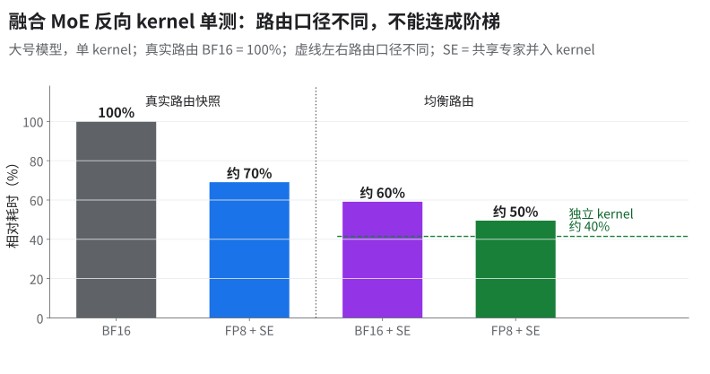
- 第一版需 Qwix ≥0.1.8，生产钉 0.1.4；它的 loss 长跑只在小号 64 芯片上做过，用的也不是生产那份代码。
- 状态表「训练集成」行那次大号 256 芯片 1000 步对齐了生产的 Qwix 版本，但早于融合 kernel 的一处梯度修复，修后没重跑。
- 共享专家前向有已知不一致（max abs 0.0046）。
- 另有两类静默错（路由 ID 配错、容量按平均负载算），见 §9.1 ④ 和 13 N01／N02。
基准卫生：漏 --xla_tpu_dvfs_p_state=7，kernel 时间差约 8%——kernel 数字带功耗档报。
9.1 fused MoE 的调参陷阱与静默错
一句话：融合路径上有五个「loss 看着差不多」的静默错误（④）。
① 四格消融：前向单独开是亏的
| 前向融合 | 反向融合 | 步时变化 |
|---|---|---|
| 开 | 关 | 慢 1–2% |
| 关 | 开 | 约 −8% |
| 开 | 开 | 快 1–2% |
- 口径：小号 64 芯片 / 128 device，FSDP64/EP2，8K，稳态第 3–9 步，loss 最大绝对差 ≤2.91e-4。
- 原理 [推断]：反向工作量大、HBM 往返多，融合省得多；前向本身轻，融合省下的 HBM 往返抵不过把 ring DMA 串进 kernel 后 XLA 失去的调度余地（原来能和别的算子/通信重叠）。
- 坑：这组数据里 ④ 的路由 ID 配错还在，融合反向的梯度有一部分送错了专家。约 −8% 是带 bug 的数，不要当定论引用。
- 前向 kernel 开「VPU 与 MXU 重叠」、循环展开 3 次：微基准快约 6%，大号模型真实训练里这段 kernel 反而慢约 30%，所以默认关闭、展开 1 次。
- 原理 [推断]：微基准是均衡路由、单独占卡；训练里路由偏斜、周围还有并发的集合通信抢 VMEM 和 DMA 带宽，展开后寄存器/VMEM 压力把重叠收益吃回去。
- 教训：kernel 调参的 winner 必须在训练 profile 里复验，微基准只做初筛。
- 反向 kernel 单测调出的最优 block 配置在 kernel 里，但全模型走另一张查表（tuned block configs），两边没同步，全模型就静默跑旧 schedule；补表的改动没过验证，未进生产。
- 教训：调参产物落在「查表」里时，要在训练日志里打印实际选中的配置，而不是只看代码进没进。
④ 五个静默错误（都不崩，只是悄悄算错）
| 错误 | 机理 | 修法 | 效果 |
|---|---|---|---|
| 容量按平均负载算 | A2A 路由 scratch 按「平均每专家多少 token」定容量，路由一偏斜，热点专家写出界、覆盖相邻专家的数据 | 按真实 expert_sizes 算 tile 对齐的偏移，flat expert-major 布局 |
首步系统性 loss 偏移约 0.02 → 10 步最大差 9.3e-5 |
| router bias 顺序 | bias 加的位置和原生路径不一致；正确做法是先算 score 再加 bias，bias 只影响「选谁」不进权重；平局要确定性 tie-break | 与上一行一起改 | 同上（三类一起修，没拆贡献） |
| BF16 舍入点 | SwiGLU gate*up 和 gate/up 投影没在生产 GMM 舍入的同一位置舍入 |
显式 BF16 舍入对齐生产路径 | 同上 |
| 路由 ID 顺序配错 | permute() 返回的权重是 token-major、排好序的专家 ID 是 expert-major，若直接把两者配对 → routed 梯度送给了错误的专家 |
用 inv_perm 恢复 token-major 后再挂 custom VJP；梯度规约全程 FP32 |
第 199 步 loss 13.658 → 13.547（原生 13.547） |
| −1 填充越界读 | top-k 的填充位用 −1，combine gather 读到 bucket_base − 1 |
填充位解析到 slot 0 | 修潜在越界，trace 字节不变 |
- 第四条最值得记：loss 只高不到 1%，200 步才看得出来。判据：融合路径和原生路径同输入、同种子对 loss，跑够长。
- 热点专家（70% 路由落在 10% 专家的合成分布）：溢出专家整个分给两个 TensorCore、借 HBM 复用槽中继被偷的权重与 dW，反向 kernel 约 −45%（微基准）；均衡路由持平。
- 均衡时 work-steal 本身有开销，所以加了门槛：每核溢出负载不均衡超过八分之一才跨核偷。
⑥ metadata 交换：从 O((EP−1)·E_local) 次远程拷贝到 O(EP−1) 次（E_local ＝ 每 shard 本地专家数，区别于 §7 的总专家数 E）
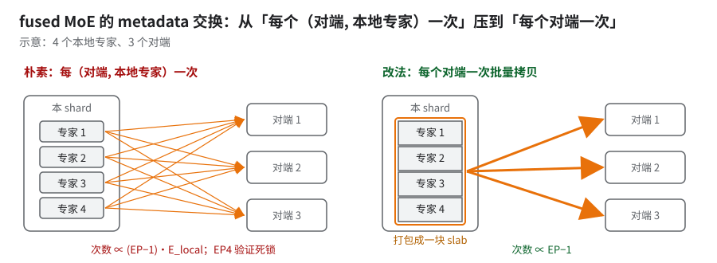
数橙色箭头：左边随本地专家数涨，右边每对端一条（示意）。
- 触发：每次远程拷贝靠收发两端 semaphore 配对；判断是发射开销大 ＋ 协议在这么多次动态拷贝下脆弱。EP=1 没有对端碰不到；EP4 验证死锁超过 40 分钟（EP2 情况不明 [推断：次数少，可能只是没暴露，需自测]）。
- 识别：不崩不报错，卡在第一次设备执行里，日志停在 TPU 设备枚举之后，验证结果文件不产出。编译慢会有编译日志推进，这里完全静默 [推断]。所以 EP>1 的验证要自带超时，超时当死锁处理。
- 改法：本地先计数 → 每专家区间 256 对齐 → 打包成紧凑 slab 一次发出；接收端用 all-gather 来的计数重建偏移。验收标准：trace 里每个对端只有一次元数据远程拷贝，EP4 验证正常结束、结果与参考一致；实测只跑通一次，稳定性未确认。
- 教训：没有这样的 kernel 时 EP>1 先用原生 GMM（01「并行方式」也是因为 all-to-all 太贵才选 EP=1）。
⑦ 单 kernel 上收到的几刀（均为算子级）
| 改动 | 原理 | 效果 |
|---|---|---|
| 尾段 route load/output store 流水化 + routed-input 预取拆两半夹住计算 + 用 VMEM bitonic 排序建 metadata（替掉 MXU-rank 和逐路由标量物化） | 把串行的 DMA 和标量工作藏到计算下面 | kernel 约 −15%（三项里 bitonic 贡献最大） |
| 共享专家计算期间提前 scatter routed input，下一 tile 在当前 matmul 前发出 | 共享专家那段 MXU 忙、DMA 空闲，正好搬下一批 | 约 −5%；routed input 的等待降到原来的一成左右或更低。调 DMA 优先级无收益 |
| 权重 tile 按 256×256 panel 逐块消费、f32 累加 | 整块 RHS 物化会让 Mosaic 寄存器溢出（spill） | 约 −4%，结果逐位相同 |
| 反向 metadata 换成 VMEM 内 bitonic sort（替掉分块逆路由构建） | 同第一行 | 均衡路由约 −7%，对抗性路由（全部集中到少数几个专家）反而慢 1–2%——没进 |
| 反向 Phase1 拆开两组权重的完成等待、先消费先到的一组 | 想让计算早点开始 | 约 +4% 稳定回归，不采用：这刀在别的 schedule 上赚过，搬到这里不成立 |
| 反向 dispatch 去掉 one-hot MXU：EP2 下改成 ring 交换 payload ＋ 本地 HBM→VMEM 按行 DMA，逆路由 metadata 在同一个 Pallas custom call 里自建；默认开，无开关 | one-hot 矩阵乘是拿 MXU 做「搬数据」，绝大多数乘的是 0；按行 DMA 只搬真正要的行 | 只有新路径的绝对值，没有前后对比；FP32 最大相对误差 3.08e-7 |
| 反向 combine 同样去掉 one-hot：改成每 64 token 一片的分段行 DMA ＋ FP32 VPU 累加，逆路由 metadata 改 VMEM bitonic sort | 同上；累加放 VPU 用 FP32，不损精度 | 均衡路由 约 −10%；最坏情况（top-k 全集中）慢不到 1%；FP32 最大相对误差 3.18e-7 |
| 在上一行基础上：逐 bucket 证明位置是仿射布局（等间距）时走 8 路 strided DMA，否则回落分段行 DMA；padding 尾部只初始化需要的、无 padding 时跳过跨 rank 清零 barrier | strided DMA 一次搬一串等间距行，比逐段发 DMA 少很多描述符和等待 | 循环均衡路由再 约 −4%；偏斜、热点路由基本持平 |
- 这几刀的坑：
- 8 路 strided 那约 −4% 只在路由恰好排成规整循环布局时成立；任意顺序的真实路由会走回落路径，拿不到。
- metadata 发射 stage 加大一倍时 scratch 超出 64 MiB VMEM，被否掉——stage 不能无限放大。
- 对抗路由要进基准集：只测均衡路由会选进「均衡快、偏斜慢」的改动。
- 真实路由比合成热点极端得多：某一层约 1/5 的专家一个 token 都没分到，最热的专家几乎被每个 token 选中。做法：从真实 checkpoint 训练中 dump 每层路由直方图（rank 0、all-reduce 之前），和无 checkpoint 的合成数据各存一套，归档成路由回放基准。
- 坑：带 checkpoint ＋ 惰性数据加载的那份还缺——AOT 预编译的 train step 加不进 dump 回调。
⑧ 尾段细分与反向几刀（生产路由回放）
| 改动 | 原理 | 效果 |
|---|---|---|
| 前向 routed 尾段：最后一个 M384 行 tile 再细分出 M128、M192 两档（原有 M256 / M320 / M384 档保留） | 尾段 token 数凑不满大档时，用大档等于白算 padding 行；多两个小档让尾巴贴合实际行数 | fused MoE 前向 约 −5%（只加 M128 一档约 −4%）；输出 allclose |
| 反向 routed FFN 只留实测有效的几刀：route bucket 翻倍、ring DMA unroll 翻倍、token 很少的专家直接走小档（不再先进大档）、dTopK 检查点从「整行 BF16」改成「每行一个 FP32 标量」 | 前两刀减少循环开销与 DMA 发射间隙；小专家直走小档省 padding；dTopK 只需要每行一个标量，存整行是浪费带宽与 VMEM | custom call 合计 约 −4%，精度门禁 PASS |
| 反向单 custom call 快路径：先算 Wd、Wgu 只读一遍；静态 M256 ＋ 可选 M128 尾段快路径，溢出或少见的专家尺寸保留滚动回落 | 权重只从 HBM 读一次，顺序上先出 Wd 让后续计算早开始 | 做进了实验版 kernel，过了带原生参考的精度与性能门禁（cosine ≥ 0.999986） |
- 坑：
- 反向那几刀未进生产；分项数字取自分段实验，不是逐项单独测的，只能当量级参考。
- 启用前向细分时要同步更新依赖源码字符串的断言（数值结果与基线相同）。
- 单 custom call 快路径调出来的配置没同步到全模型那张查表（见 ③）。
- 前向 scratch 放进 scan 的可微 carry → 编译期显存翻一倍多、AOT OOM；移出后仍略超，再把 fused 前向 token block 减半才过（运行时性能未测）。Pallas scratch 不要进
scan的可微 carry——[推断] carry 会按层被当成激活保存。 - scoped VMEM：fused kernel 集成把
--xla_tpu_scoped_vmem_limit_kib从 65536 改成 65472（理由是 v7x 要留 64 KiB 给运行时控制区；公开文档未说明，判据是实测 VMEM 可用上限）——这只是 fused kernel 集成里的值，生产公共配置仍是 65536；48 MiB 那个坑见 06。 - 同一集成换新版 JAX/libtpu 慢约 9%：升版本要连 fused kernel 一起回归。
10.kernel 坑：静默错与调参陷阱
贯穿 §2–§9。
⚠️GMM 的三个静默 NaN／静默分叉
- GMM v2 尾 tile 只 mask 了 RHS → NaN
- 症状：第 0 步 loss 正常、grad_norm 已经是 NaN。
- 机理：LHS 越界部分读到 VMEM 残值（可能是 NaN），NaN × 0 仍是 NaN。
- 修法：LHS 也按
iota(...) < valid_kmask。GMM v2 一直开着，只有 K 不整除 tile_k 的形状才撞得上；大号生产形状会不会触发，没查到。- 换模型先算一遍：自己的 K 能不能被 tile_k 整除。能整除的形状永远测不出这个 bug。
- 修复只在生产代码里；上游 MaxText / Tokamax 有没有同样的修复未核，用上游时先按下面的断言自查。
- 启动时可加的断言（伪代码，在建模型、拿到 tile 配置之后、第一步之前跑）：
每个专家权重的两个维度各在一个方向上当 K，所以两维都要查。drhs（kernel 是 tgmm）收缩的是 token 维，本身是 ragged 的，同一个 bug 会不会在那里触发未核。for w in expert_weights: # wi（gate/up 融合开时 N 翻倍）、wo d_in, d_out = w.shape[-2:] assert d_in % tile_k(fwd, w) == 0 # 前向 fwd：K = 输入维（wi 是 hidden，wo 是 FFN 维） assert d_out % tile_k(dlhs, w) == 0 # 反向 dlhs：K = 前向的 N- 运行时兜底：第 0 步检查 grad_norm 是否有限，不有限就停。
- ragged / GMM 只写
group_sizes覆盖的行：其余输出行未初始化（可能是 HBM 残留 NaN）。前向不用，但反向d_sorted_weights = grad × intermediate会把 0 × NaN 带进梯度，ring-of-experts 路径第 1 步就 NaN。修法：SwiGLU 之后、乘路由权重之后各加一道 mask。- 同类第二处：ring 路径漏了
expert_counts的psum，routed bias 的负载统计只用本 shard 样本，噪声大，各设备的 bias 慢慢分叉。补上沿 batch 轴（不含 expert 轴）的 psum。
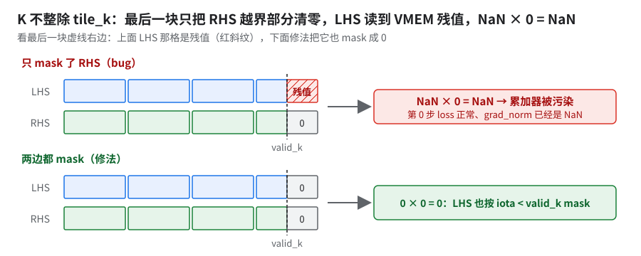
看最后一块虚线右边的 LHS 格（示意）。
⚠️Pallas kernel 里的 Python 循环会在 trace 时完全展开
- 一个 GMM 反向 kernel 用 Python
for遍历专家和 K 块，trace 时全展开成「专家数 × K 块数 × N/128」条静态 DMA 指令——指令数随专家数线性膨胀。- 改成
lax.fori_loop：单 kernel lowering 预计快几个数量级 [推断：未实测]；整个 train step lowering 快约 100 倍；CPU AOT 从约 66 分钟降到约 38 分钟（约 −45%）。- 运行时不变（DMA 一条没少，只是不再静态展开），所以这个坑只在编译/启动时间上看得见。
「8×128 tile 数是 6 的倍数」怎么核（规则本身和预判步骤见 02 §5）
- 看字段：编译 dump 里该 RS 的后端配置，
collective_offload_config→reduce_scatter_offload_config下的use_n_dimension_strategy是 true 还是 false。 - 看现象：在 JAX 层自己 pad 再 slice，RS 会被改写成 all-reduce ＋ dynamic-slice，落 TensorCore。HLO 里这个 RS 的 opcode 没了，就是退化了。
- 「tile 数是 6 的倍数」和「JAX 层自己 pad 到 48 的倍数」管的不是一件事，区别见 02 同节；补到 48 保留 SC 原生 RS，但成对总时间仍慢约 15%，端到端没收益（单个实验）。
tile 扫描的两条硬规矩
- 先查数值再排名：扫 Splash tile 时，排第一的候选往往正是因为它算错了（NaN 或错误梯度）。每个候选先与同输入同种子的基线比数值、拒绝非有限值，再排性能（这道检查尚未实现）。
- CP 下
block_q必须整除每分片的序列长度：CP8／CP16 时每分片 q 变短，原block_q不整除，初始化报错。修法：按 CP 后长度自适应选 block 并提前校验。block 修好后，CP16 接着撞上原先被盖住的 HBM OOM——一个失败会藏住下一个，修完要重跑到底。
tile／kernel 选型的反例
| 做了什么 | 结果 | 教训 |
|---|---|---|
| 把 fwd 扫出的最优 GMM tile 直接套到 dlhs | 回退 | 三个方向各扫各的（另见 §7 dlhs slot 填反） |
| 打开 gate/up 融合开关，但 tile 仍是默认值（N 是专家 FFN 宽的两倍） | 反而慢约 3%（小号 64 芯片）；配合扫过的 tile 才赚 | 融合开关和 tile 耦合，要一起扫 |
| 自写 double-buffer GMM kernel | 微基准三档里最快，端到端最慢——all-gather 与 GMM 没交错开，重叠变差 | 和 §2 同一个道理：调度余地比单算子快慢重要 |
| Pallas grouped top-k router（只输出 ID） | V2 比 V1 慢约 4–15%；V1 在 TPU 上平局顺序不可控（Mosaic lane 归约），对 token-drop MoE 会改变训练行为 | 自写 top-k 必须做稳定 tie-break 并与 lax.top_k 逐 ID 对齐；没进 |
| token permute 单独融合（上一代模型上） | 约 +20% 退化 | — |
索引式 GMM：把 token permute 融进第一次 GMM，不物化 sorted_inputs |
4 芯片上步时持平（不到 1%）；EP>1 时收益摊到 1/EP 且要额外 all-gather，不兼容 blockwise FP8 | 省显存的融合先算 EP 下还剩多少 |
| 去掉 unpermute 阶段再乘的全 1 权重（权重已前移到 SwiGLU） | 零收益，显存峰值不变 | [推断] XLA 本来就把乘全 1 折掉了；改前先看 HLO 里它还在不在 |
11.共享专家：怎么切、要不要量化、要不要并进路由 GMM（汇总）
| 问题 | 书里的结论 | 出处 |
|---|---|---|
| 值不值得花力气 | 大号模型 256 芯片里共享专家约占步时 2%，远小于路由 MoE 和 KDA | 01「时间花在哪」 |
| 怎么切 | EP=1 时和稠密 MLP 一样走 FSDP 的 AG／RS；EP>1 时 expert 轴也切它的 embed 维，不整份复制 [推断：按规则表读，以编译后 sharding 为准]。规则见表下；生产配置怎么切没单独核 |
上游 layers/moe.py、layers/linears.py、configs/base.yml |
| 排在哪、能不能和通信重叠 | 走稠密 dot 不进 GMM；能否藏在 a2a／AG 底下没量过 | §7.6 |
| 要不要 FP8 | 生产配方里它走 FP8；但单看 dot 只有约 1.1×，加上量化准备后前向反而慢约 30%，留 BF16 可能更划算（没 A/B）。留 BF16 的规则写法和验证法见出处 | 04 §3.1 |
| 要不要并进路由 kernel | 融合 kernel「吸收共享专家」：其 MXU 忙、DMA 闲时提前搬下一批路由输入（约 −5%）；FP8 反向再融合 EP2 约 −4%。都是 kernel 级；前向有已知不一致、反向精度对照组 FAIL，融合 kernel 未进生产 | §9 ⑦、§9「训练集成的验证缺口」、§12 表「共享专家反向精度」、04 §8 |
| remat 能不能单独给它一档 | 不能：激活名和路由专家撞车 | §7.6 |
| FLOPs 有没有算进去 | 上游公式只在白名单 decoder_block 里算共享专家，自研 decoder 常被漏 |
01「换成 GQA 模型」 |
| profile 归因 | 按名字归因会把一大段路由 GMM 时间算到共享专家头上；要按编译后 tf_op scope 归因 |
01「怎么量」 |
- 切分规则：上游
RoutedAndSharedMoE里共享专家是普通MlpBlock，权重逻辑轴("embed", "mlp")／("mlp", "embed")；base.yml把embed映到fsdp／…／expert，mlp映到fsdp_transpose／tensor／…。 - 照抄的默认做法：先按上游，共享专家单独走稠密 dot、跟随 FSDP 切；量化与否单独做一次 A/B；只有在已有经过端到端 loss 验证的融合 kernel 时，才考虑并进路由那边。
12.还没解决的
| 问题 | 证据 | 口径 | 状态 |
|---|---|---|---|
| KDA 离 roofline 远 | 反向占 KDA 的五到六成；KDA 反向再优化一轮约 −15% | 大号 256 芯片，GBS 1024 / PDB 2 | open |
| sparse-h 重算（反向只每隔 2 个 chunk 存一份 KDA 状态 h，其余现场重算）只有 kernel 数据 | kernel 约 −10%，端到端没有数 | 单 kernel、8K；小号 64 芯片端到端未跑出结果，未进生产 | open |
| FP8 × fused 反向 mega-kernel 的 T8/T16 layout 冲突：T8/T16 指 8×128 和 16×128 两种 tile 布局，FP8 下两边要的 tile 行数对不上，编译期 layout 校验报错 [推断：机理按报错名和 flag 名推] | 全局把 large_2nd_minor_layout 设 false 绕开；修了 layout 兼容的新版上要设回 true |
大号 FP8、PDB 2；修复只跑了小号 64 芯片 1000 步，大号 256 芯片验证没有结果 | open |
| compact/no-pad 默认开，只验证 20–50 步 FP8 + 1000 步小号 | 两项应分开验证：一起开时出了偏差分不清是哪一项 | 短跑是大号 FP8 256 芯片；长跑是小号 64 芯片 | 生产配置里有 |
| 共享专家反向精度 | 对照组（不打补丁）LM 相对差约 2% FAIL；打补丁的配置没有结果 | 小号形状、200 步、full remat、三个融合开关全开；芯片数／PDB 未写 | open |
| 上游 kernel 库没有可用的 KDA kernel | 生产用的 kernel 库不公开，外部要自己写（§5 骨架） | — | open |
共同点：第 2–5 行都卡在验证，不卡在思路，长跑多半只在小号 64 芯片上做过；引用这些数时要连同模型和芯片数一起报。
考考自己
你给某层加了 checkpoint_name("x") 并在 remat 策略里要求保存 x，profile 里前向照样被重跑。最可能的原因？
答：计算在 custom_vjp 里，f_bwd 只认 f_fwd 返回的残差。要在 f_fwd 内部打 tag（§2），或由 kernel 提供保存点。